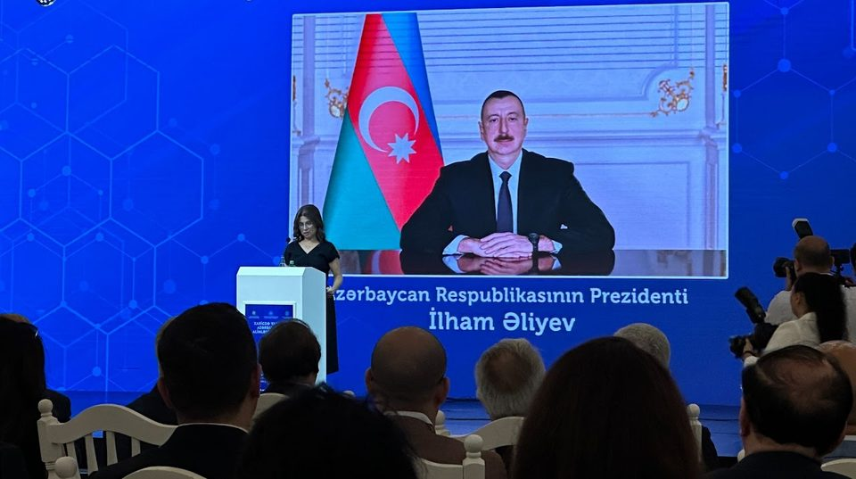
Fərəh Əliyeva, Azərbaycan Respublikası Prezidentinin Administrasiyasının humanitar siyasət məsələləri şöbəsinin müdiri
Forum 2024-lə bağlı mediada yayımlanan video reportajlar və müsahibələr

Fərəh Əliyeva, Azərbaycan Respublikası Prezidentinin Administrasiyasının humanitar siyasət məsələləri şöbəsinin müdiri

Xaricdə Yaşayan Azərbaycanlı Alimlərin Forumunun ilk günü
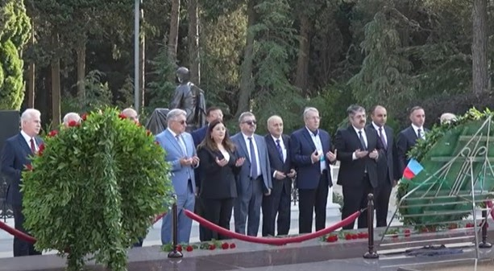
Fəxri Xiyabanın və Şəhidlər Xiyabanının ziyarət edilməsi
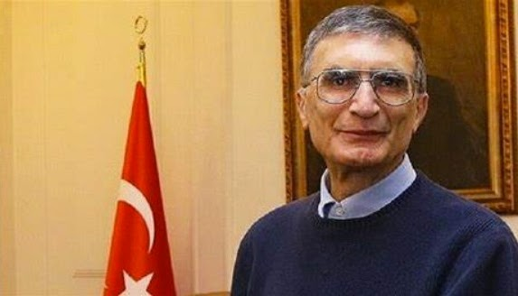
Nobel mükafatçısı, türk həkim akademik, biokimyaçı, molekulyar bioloq və elm adamı Əziz Səncərin Xaricdə Yaşayan Azərbaycanlı Alimlərin Forumuna təbriki
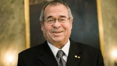
Nobel mükafatçısı, Milli Elmlər Akademiyasının üzvü, Rusiya Federasiyasının əməkdar elm xadimi, Dana və David Dornsife Kimya kafedrası, Kimya və biokimya üzrə fəxri professor Arie Varşelin Xaricdə Yaşayan Azərbaycanlı Alimlərin Forumuna təbriki
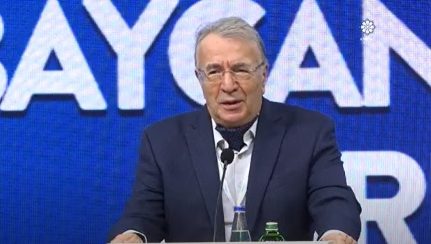
Məsud Əfəndiyev, Əməkdar elm xadimi, Münhen Texniki Universitetinin professoru, Humboldt mükafatı alan ilk azərbaycanlı alim, Dünya Azərbaycanlı Alimlər Birliyinin İdarə Heyətinin sədri, Almaniya
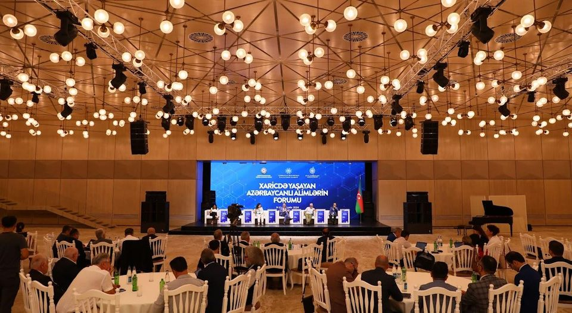

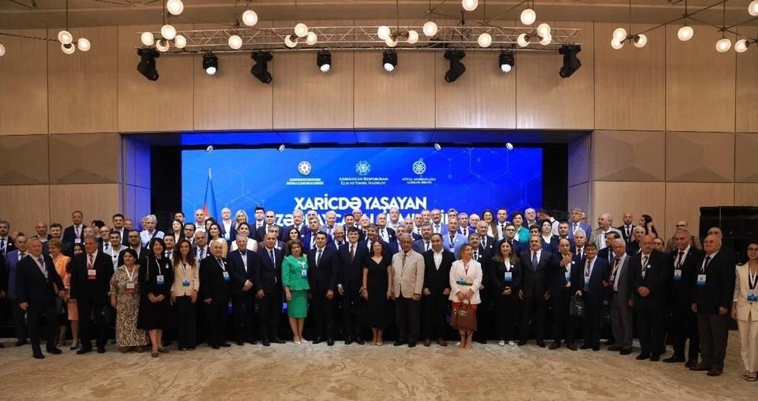


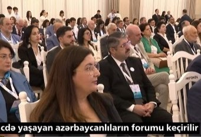

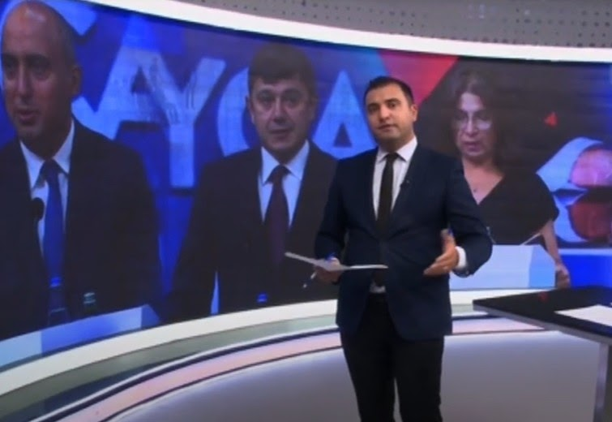

Reza Heyəti, Səidə Xəlilova, Kamran Rüstəmov, Ədalət Muradov, Toğrul Talışinski, Bəxtiyar Siracov, Arif Quliyev
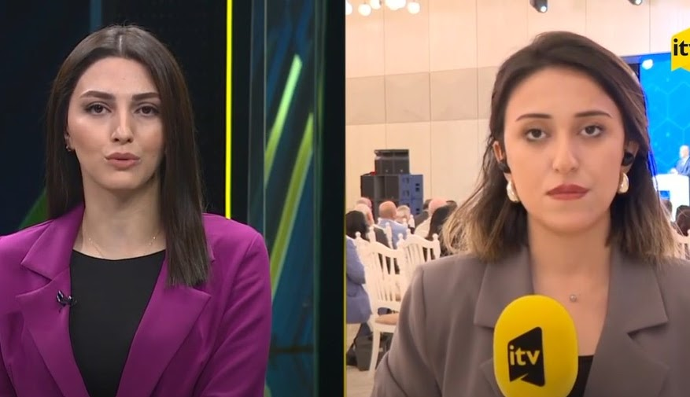
Bakıda xaricdə yaşayan azərbaycanlı alimlərin forumu keçirilir
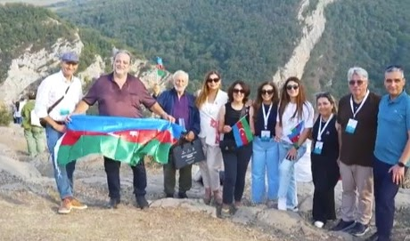
Xaricdə Yaşayan Azərbaycanlı Alimlər Xankəndi və Şuşaya səfər ediblər
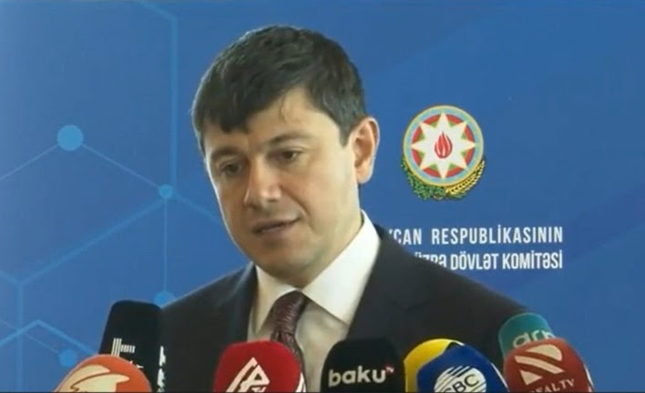
Fuad Muradov, Azərbaycan Respublikası Diasporla İş üzrə Dövlət Komitəsinin sədri

Emin Əmrullayev, Azərbaycan Respublikası Elm və Təhsil Naziri
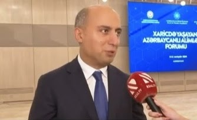
Emin Əmrullayev, Azərbaycan Respublikası Elm və Təhsil Naziri
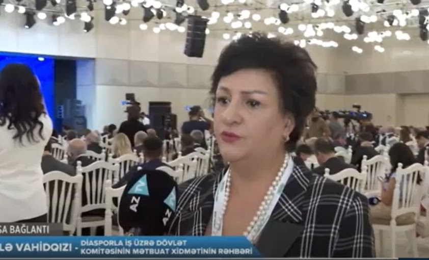
Vəsilə Vahid qızı, Azərbaycan Respublikası Diasporla İş üzrə Dövlət Komitəsinin şöbə müdiri
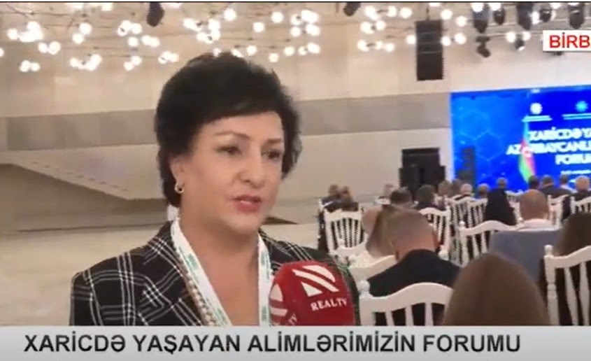
Vəsilə Vahid qızı, Azərbaycan Respublikası Diasporla İş üzrə Dövlət Komitəsinin şöbə müdiri

İsa Həbibbəyli, Azərbaycan Milli Elmlər Akademiyasının Prezidenti

Rasim Əliquliyev, AMEA-nın vitse-prezidenti, AR ETN İnformasiya Texnologiyaları İnstitutunun baş direktoru
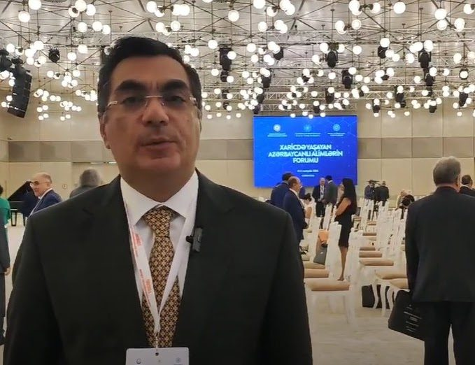
Elmar Qasımov, Bakı Ali Neft Məktəbinin rektoru

Gülçöhrə Məmmədova, Azərbaycan Memarlıq və İnşaat Universitetinin rektoru
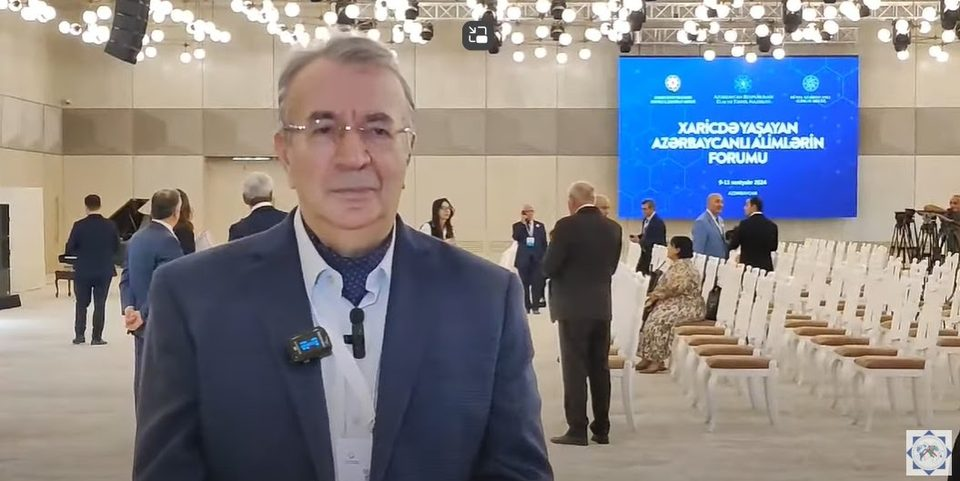
Məsud Əfəndiyev, Əməkdar elm xadimi, Münhen Texniki Universitetinin professoru, Humboldt mükafatı alan ilk azərbaycanlı alim, Dünya Azərbaycanlı Alimlər Birliyinin İdarə Heyətinin sədri, Almaniya
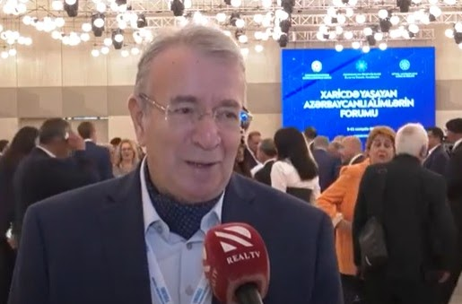
Məsud Əfəndiyev, Əməkdar elm xadimi, Münhen Texniki Universitetinin professoru, Humboldt mükafatı alan ilk azərbaycanlı alim, Dünya Azərbaycanlı Alimlər Birliyinin İdarə Heyətinin sədri, Almaniya Qərib Mürşüdov, Böyük Britaniyanın York Universitetinin Kimya fakültəsinin Struktural Biologiya Laboratoriyasının professoru, Azərbaycan Respublikasının əməkdar elm xadimi, Birləşmiş Krallıq

Məsud Əfəndiyev, Əməkdar elm xadimi, Münhen Texniki Universitetinin professoru, Humboldt mükafatı alan ilk azərbaycanlı alim, Dünya Azərbaycanlı Alimlər Birliyinin İdarə Heyətinin sədri, Almaniya

Seymur Nəsirov, Misirin Qahirə Universitetinin professoru, Misir-Azərbaycan Dostluq Cəmiyyətinin idarə heyətinin sədri, Dünya Azərbaycanlı Alimlər Birliyinin İdarə Heyətinin həmsədri, Misir
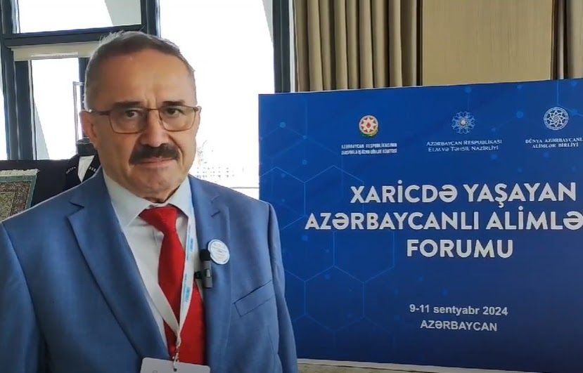
Yulduz Rəhimov, Kanada, York Universiteti (Toronto), Elm Fakültəsinin Riyaziyyat və Statistika Departmenti, Mövsümi Dosent, Dünya Azərbaycanlı Alimlər Birliyinin İdarə Heyətinin üzvü, Kanada
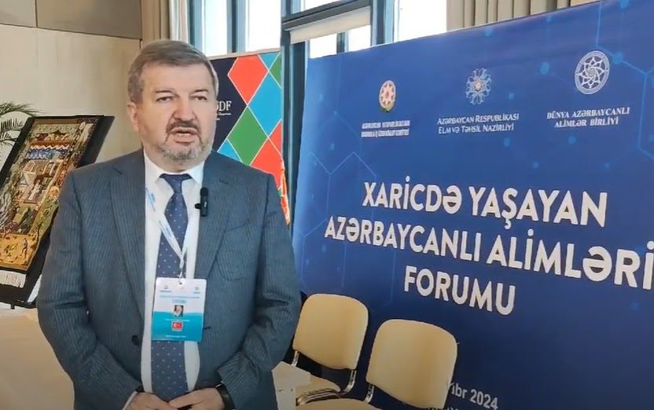
Toğrul İsmayıl, Türkiyənin Kahramanmaraş Sütçü İmam Universitetinin Beynəlxalq münasibətlər şöbəsinin müdiri, professor, Dünya Azərbaycanlı Alimlər Birliyinin İdarə Heyətinin üzvü, Türkiyə

Bəxtiyar Siracov, Atom Enerjisi üzrə Beynəlxalq Agentliyin “Safeguards” departamentində İnformasiya Sistemləri şöbəsinin rəhbəri, 2005-ci il Nobel Sülh mükafatçısı, Dünya Azərbaycanlı Alimlər Birliyinin İdarə Heyətinin həmsədri, Avstriya
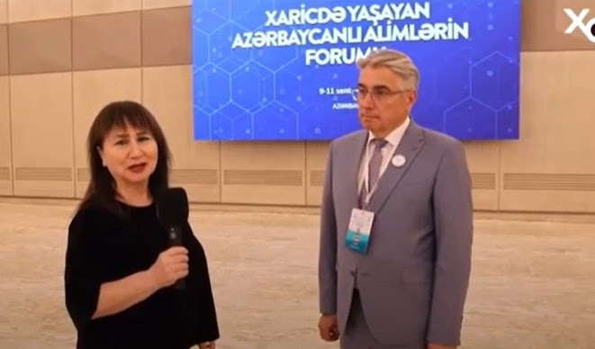
Bəxtiyar Siracov, Atom Enerjisi üzrə Beynəlxalq Agentliyin “Safeguards” departamentində İnformasiya Sistemləri şöbəsinin rəhbəri, 2005-ci il Nobel Sülh mükafatçısı, Dünya Azərbaycanlı Alimlər Birliyinin İdarə Heyətinin həmsədri, Avstriya
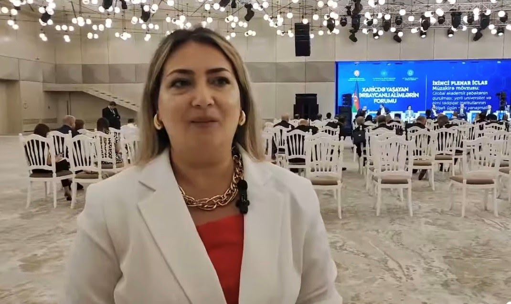
Aytəkin Hüseynli - Asistent Tədqiqat Professoru, Vaşinqton Universiteti (St. Louis), ABŞ

Reyhan Həsənova, Beynəlxalq “Oracle France” şirkətində tədqiqat məsləhətçi, Fransa

Akif Alaferdov, “Qırğızıstan-Azərbaycan” Dostluq və Əməkdaşlıq Birliyinin sədri, Qırğız Respublikasının Əməkdar həkimi, Qırğızıstan

Afina Barmanbay, Qars Kafkas Universiteti Fən və Ədəbiyyat Fakültəsi Çağdaş Türk ləhcələri və Ədəbiyyatları Şöbəsində müəllim, Türkiyə

Xaqani Qayıblı, Tartu Universiteti – Türk Dili Mərkəzinin müdiri, professor, Estoniya

Sevinc Əskərova, Tibb elmləri doktoru, TEA-nın akademiki, Əməkdar Elm və Təhsil Xadimi, Rusiya
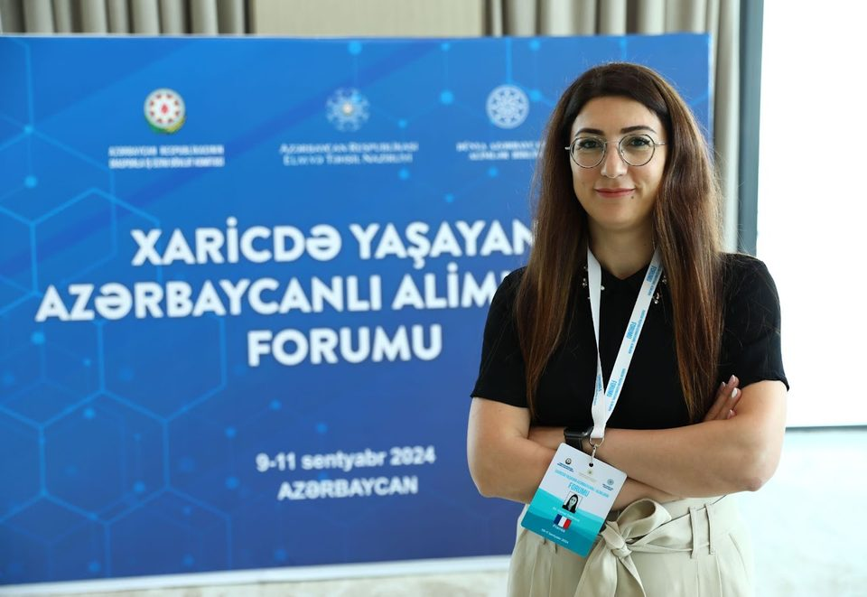

Nigar Məsumova, İqtisad elmləri namizədi, dosent, Reklam və ictimaiyyətlə əlaqələr kafedrasının müdiri, Rusiya Federasiyası Xarici İşlər Nazirliyinin MDBMİ Universitetinin beynəlxalq jurnalistika fakültəsinin dekan müavini, Rusiya
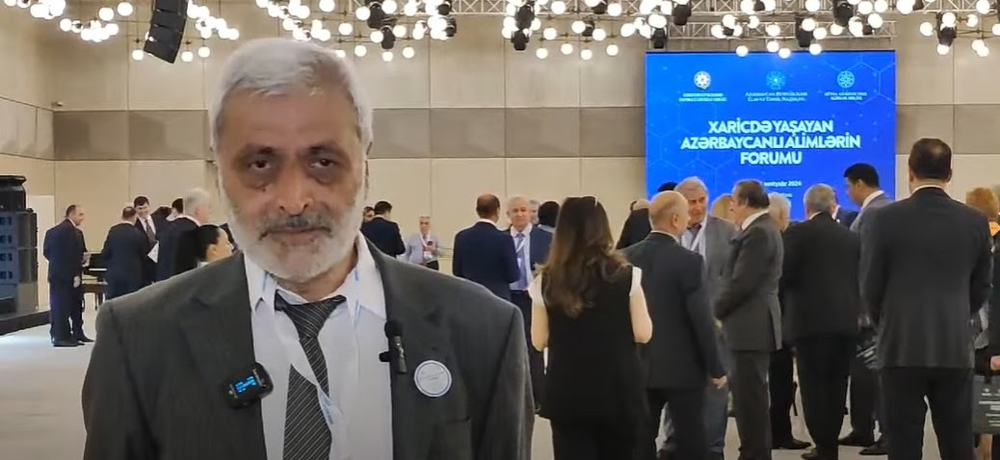
Qərib Mürşüdov, Böyük Britaniyanın York Universitetinin Kimya fakültəsinin Struktural Biologiya Laboratoriyasının professoru, Azərbaycan Respublikasının əməkdar elm xadimi, Birləşmiş Krallıq
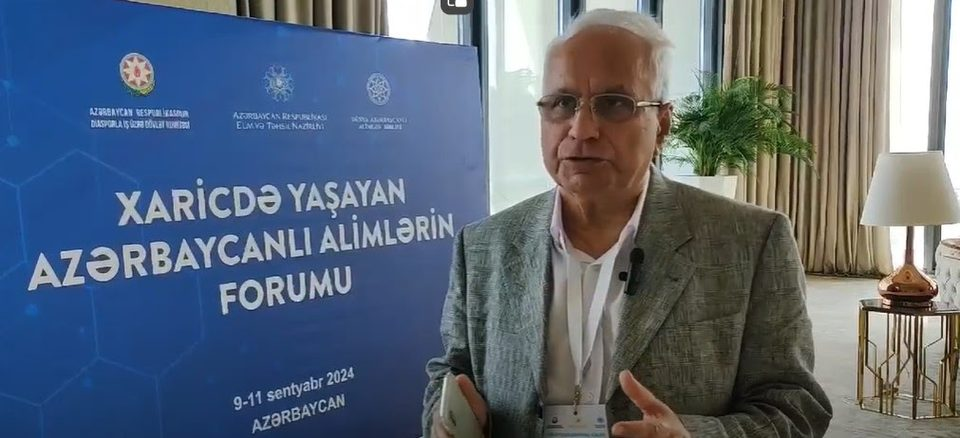
Kamran Rüstəmov, Azərbaycan Respublikasının əməkdar elm xadimi, Rusiya Memarlıq və İnşaat Elmləri Akademiyasının əcnəbi üzvü, Azərbaycan Respublikası və Rusiya Federasiyası Jurnalistlər İttifaqının üzvü, publisist, ictimai xadim, elmlər doktoru, Rusiya
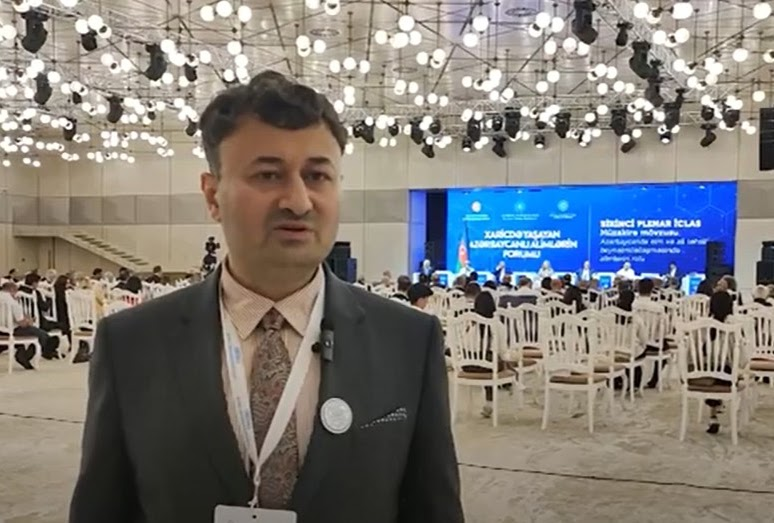
Rövşən İbrahimov, Hankuk Regionşünaslıq Universitetinin professoru, elmlər doktoru, Koreya

Mirzə Mütəllimov, Mainz Universitetinin Təhsil Xəstəxanası və Saarland Universitet Klinikasında Aparıcı Baş Mütəxəssis- Kardioloq, Baş Tədqiqatçı Həkim, Almaniya Şəhriyar Muxtrov, VistulaUniversiteti, Dokturantura proqramının rəhbəri və İqtisadiyyat və Maliyyə kafedrasının professoru, Polşa Korea Universiteti, İqtisadiyyat kafedrasının professoru, Koreya Bəxtiyar Siracov, Atom Enerjisi üzrə Beynəlxalq Agentliyin “Safeguards” departamentində İnformasiya Sistemləri şöbəsinin rəhbəri, 2005-ci il Nobel Sülh mükafatçısı, Dünya Azərbaycanlı Alimlər Birliyinin İdarə Heyətinin həmsədri, Avstriya

Şəhtiyar Muxtarov, Vistula Universiteti, Dokturantura proqramının rəhbəri və İqtisadiyyat və Maliyyə kafedrasının professoru, Polşa Korea Universiteti, İqtisadiyyat kafedrasının professoru, Koreya Toğrul Talişinski, St. Joseph Universiteti/Minimal İnvaziv Cərrahiyyə Direktoru, Seton Hall Universitetinin Hackensack Meridian Tibb Məktəbində cərrahiyyə üzrə dosent, ABŞ

Arzu Qurbanova, Pedaqoji elmlər namizədi, Mərkəzi Asiya İnnovasiyalar Universitetinin Dil və ədəbiyyat kafedrasının professoru, Qazaxıstan
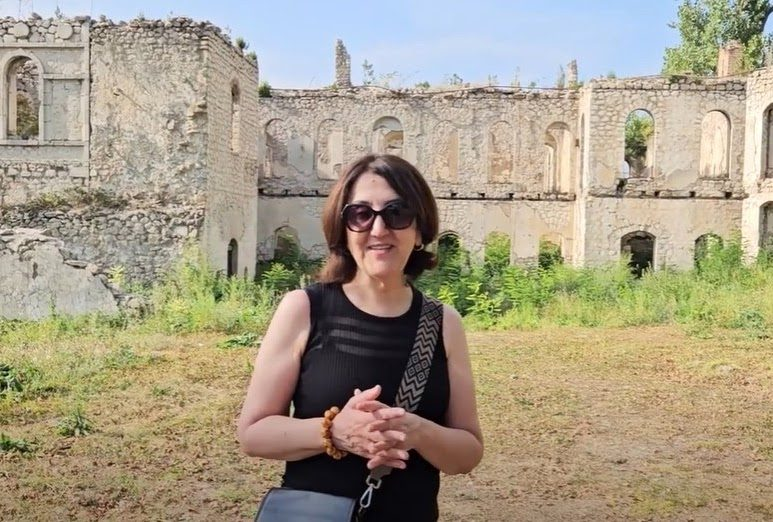
Cəmilə Cavadova-Spitsberq, Azərbaycanın musiqi elmləri doktoru dərəcəsini almış ilk qadın orqan ifaçısı, Texas Universitetinin professoru, ABŞ
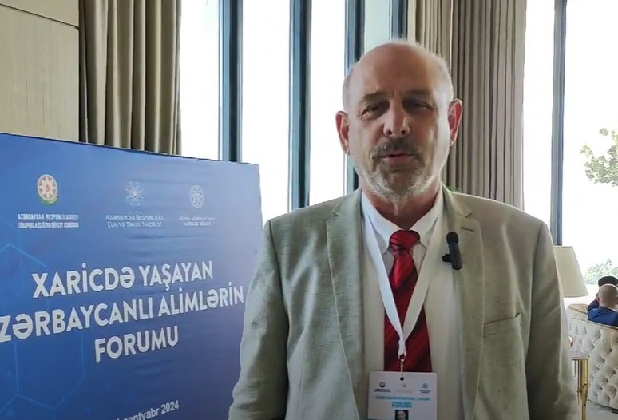
Lev Eppelbaum, Tel-Əviv Universitetinin Geofizika fakültəsinin professoru, Azərbaycan Dövlət Neft və Sənaye Universitetinin fəxri professoru, İsrail
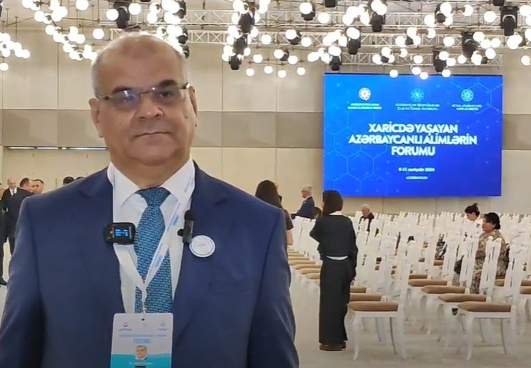
Yaşar Musayev, Siemens Energy, Almaniya, Elm və Təhsil bölməsi (R&D), Yaşıl Energy Technologiyaları; Senior Management, Almaniya

Azər Abdullayev, Səudiyyə Ərəbistanı Krallığında travmatoloq-ortopedik cərrah, konsultant, ortopediya şöbəsinin müdiri, Səudiyyə Ərəbistanı Krallığı
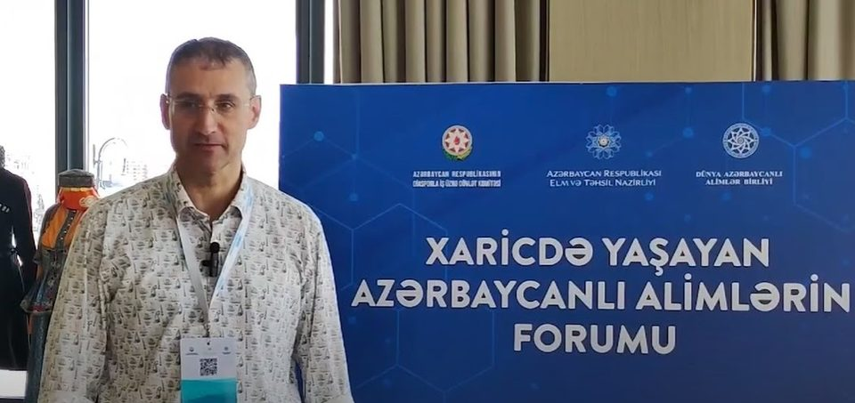
Emil Əhmədov, Moskva Fizika-Texniki İnstitutu, L.D.Landau adına Nəzəri Fizika kafedrasının müdiri, elmlər doktoru, Rusiya
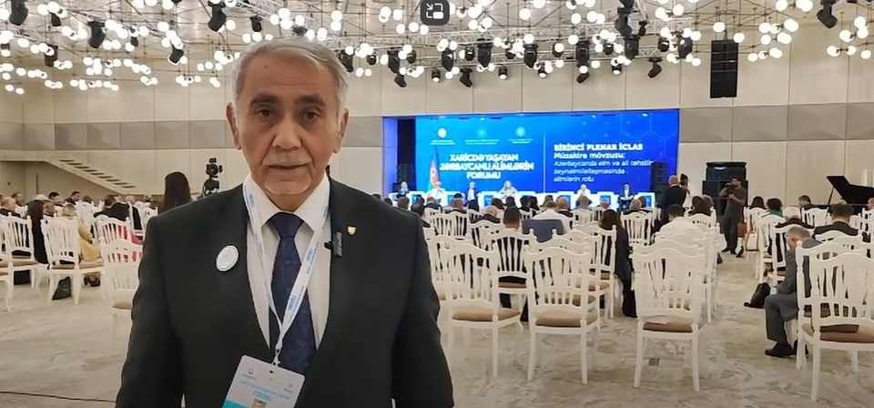
İlham Axundov, Kanadanın Vaterlu Universitetinin riyaziyyat fakültəsinin riyaziyyat və biznes üzrə proqramlar direktoru, professor, Kanada
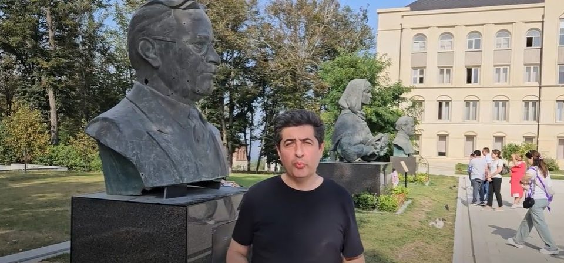
Əbülfəz Süleymanlı, Türkiyənin Üsküdar Universitetinin Sosiologiya kafedrasının müdiri, Beynəlxalq Türk Akademiyasının eksperti, professor, Türkiyə
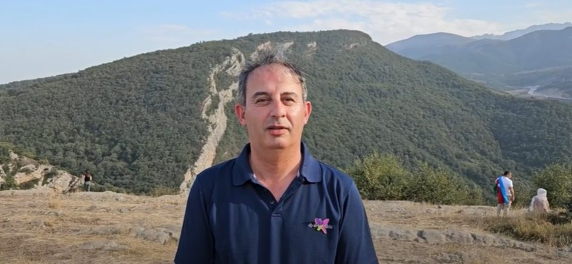
Məmmədrza Heyət, Təbriz Araşdırmaları Mərkəzinin rəhbəri, “Varlıq” jurnalının baş redaktoru, Ankara Universitetinin müəllimi, Türkiyə
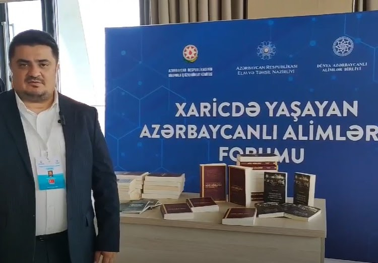
Dilqəm Əhmədov, Türkiyənin İstanbul Universitetinin doktorantı, Türkiyə

Şəhriyar Muxtrov, VistulaUniversiteti, Dokturantura proqramının rəhbəri və İqtisadiyyat və Maliyyə kafedrasının professoru, Polşa Korea Universiteti, İqtisadiyyat kafedrasının professoru, Koreya
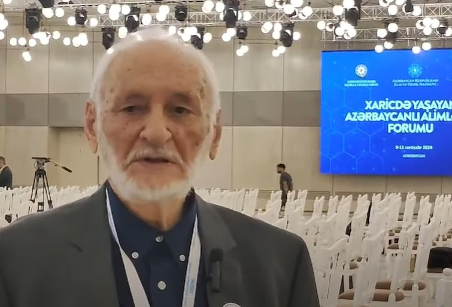
Natiq Ağakişiyev, Fizik, riyaziyyatçı, əməkdar elm xadimi, professor, Meksika

Valeh Rüstəmov, Almaniyanın Mannhaym Tətbiqi Elmlər Universitetinin postdoktoral tədqiqatçısı, Almaniya
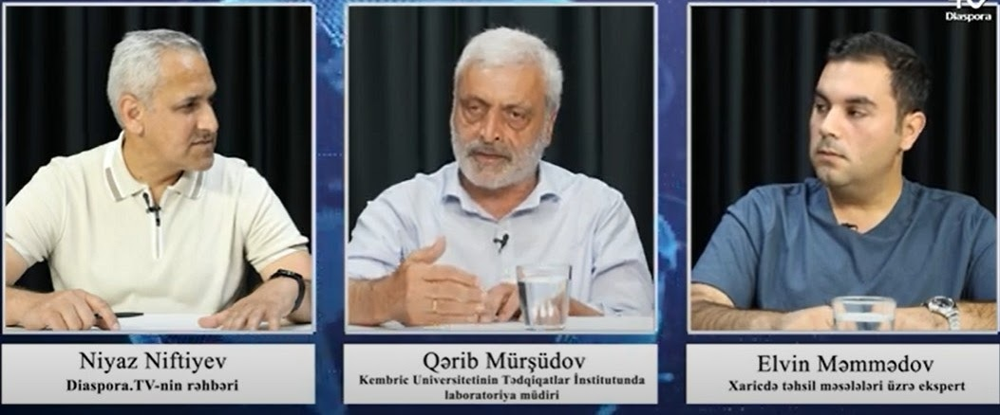
Böyük Britaniyanın Kembric Universitetinin Tədqiqatlar İnstitutunda laboratoriya müdiri Qərib Mürşüdov, Birləmiş Krallıq və xaricdə təhsil məsələləri üzrə ekspert Elvin Məmmədov
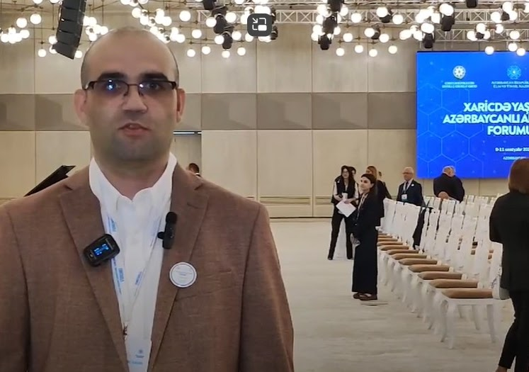
Şuay Abdullayev, Amerikanın Corciya Universitetində postdoktoral tədqiqatçı, ABŞ
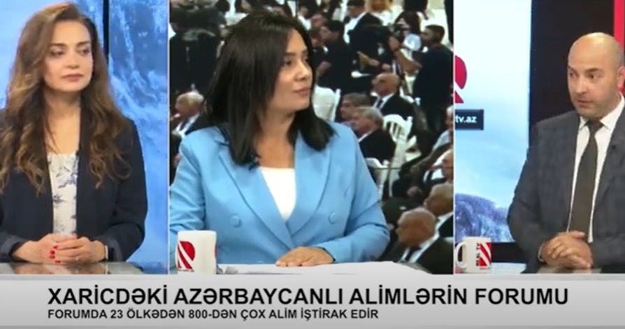
Sevinc Məmmədova, Corc Vaşinqton universitetinin professoru, ABŞ Rauf Abdullayev, İKT üzrə mühəndis, Almaniya Messoud Efendiyev, Chairman, Germany, James D.Murray Distinguished Professor DAAB-ın Türkiyədə qeydiyyatdan keçdiyi ünvan: Feneryolu Mahallesi Gazi Muhtar Paşa Sokak No: 44 Kadıköy, İstanbul, Türkiyə Phone: +905551474674 Email: daad.waas2024@gmail.com Web: https://daab-waas.org